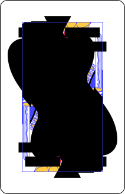

Counting Cards
Objective
Card counting is a casino card game strategy used primarily in the blackjack
family of casino games to determine whether the next hand is likely to give a
probable advantage to the player or to the dealer. This app teaches the basic Hi-Lo system.
Card counting is not illegal but casinos reserve the rights to whom they let play at any table.
Running Count (RC)
The Running count is the running total of each card's assigned value. The assigned value should not be confused
with the actual value of the card as related to a hands total.
- Each Card is Assigned a value of +1, neutral(0) or -1.
- Cards Ace, King, Queen, Jack, and Ten all have a values of -1.
- Cards 2 to 6 all have a values of +1.
- Cards 7, 8 & 9 all have a neutral(0) value.
- The sum of all the +1 and -1 values of each card for each hand each for every round is the running count.
- A positive running count is good for the player because it means more
low cards have passed so face cards should be on the way.
Face cards are bad for the dealer making them more likely to bust.
Tips
- Look for meaningful pairs when counting.
A meaningful pair means the assigned values of the cards in the hand cancel out.
- Example,

This hand adds 0 to the running count.
True Count (TC)
True count is essentially the Running count divided by the number of decks that have not yet been dealt.
A positive true count means better odds for the player and can be used to determine to place a higher bet.
- True count = RC / Remaining decks
- This platform calculates the remaining decks for you to the nearest tenths decimal however in the casino it will be a visual
approximation or it can be done mathematically by average cards per hand x players x rounds.
- This platform shows TC to the tenth decimal place but it is likely best to stick to
rounded whole numbers in casinos for easier math.
Betting Unit (BU)
This is a player decided bet placement that is used as the base bet throughout a game.
Example: A player decides 1 unit is $10. Betting unit could be the table minimum or a money
amount the player is comfortable with.
Optimal Bet
Optimal bet is the best bet for a player to place for any given hand based on True count
Optimal bet is calculated from the true count minus betting unit.
Optimal bet = TC - BU
This platform will not display a Optimal bet of less than 1 unit.
Based on the Hi-lo System there needs to be a true count of at least +2 for it to have any betting significance for the player,
therefor the platform will only update optimal bet when True count is +2 or more.
Glossory
- Face Cards: Cards that have a Face instead of a number or equal 10 in value. (Ace, King, Jack, Queen, Ten)
- Meaningful Pairs: The two cards in the hand have assigned values that cancel each other out.
- Hi-lo System: One of many card counting strategies.